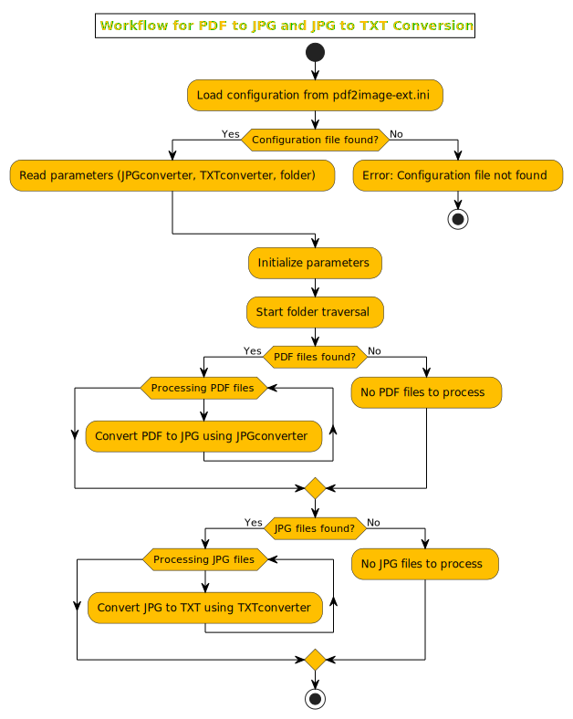

Python code
Generate JPG and TXT from PDF
To generate this website documentation, I utilized a process that involves creating images using Poppler, and as a bonus, Tesseract is used to convert these images to text files, enhancing document searchability via search engines.
So, its usage requires the installation of these two additional tools. For further details, please refer to the comments in the code.
pdf2image-ext.py
# Python version : 3.12+
# Author : Jan Affolter
# Date : 20240628
# v1.0 : 20240811
# solve the problem of executing the script where it resides due to .ini file
# not foundable solved with new ini_path value.
#
# v1.0 : 20240628
# initial release
# Purpose:
# convert PDF to JPG and then JPG to TXT using OCR.
# The goal here is to make my PDF and JPG documents searchable using Windows indexing feature.
# programs to install, add executables PATHs in Windows PATH environment variable
# -> System -> System information -> Advanced systems parameters -> environment variables -> Path
# OCR with tesseract
# - https://github.com/UB-Mannheim/tesseract/wiki
# PDF 2 JPG with Poppler
# - https://github.com/oschwartz10612/poppler-windows?tab=readme-ov-file
# next enhancement
# Python search engine : https://github.com/bartdegoede/python-searchengine/tree/master
# import module section
import configparser
import sys, os
# -------------------------------------
# read config file and get parameters section
config = configparser.ConfigParser()
ini_path = os.path.join(os.path.abspath(os.path.dirname(sys.argv[0])),'pdf2image-ext.ini')
# old ini_path
# ini_path = os.path.join(os.getcwd(),'pdf2image-ext.ini')
config.read(ini_path)
# print(ini_path)
# get data from config file (.ini)
JPGconverter = config.get('settings','JPGconverter')
TXTconverter = config.get('settings','TXTconverter')
folder = config.get('settings','folder')
# -------------------------------------
def converttoJPG():
counter=0
print("\n1. Convert PDF to JPG\n=====================")
for root,dirs,files in os.walk(folder):
for f in files:
if f.endswith('.pdf'):
counter=counter+1
myoutfile = (os.path.join(root, f)).split('.pdf')[0]
print(f"{counter:03d}. " + "convert " + myoutfile + ".pdf")
command = JPGconverter + ' "' + myoutfile + '.pdf' + '" "' + myoutfile + '"'
# print(command)
return_code = os.system(command)
# print("Return code:", return_code)
def converttoTXT():
counter=0
print("\n2. Convert JPG to TXT\n=====================")
for root,dirs,files in os.walk(folder):
for f in files:
if f.endswith('.jpg'):
counter=counter+1
myoutfile = (os.path.join(root, f)).split('.jpg')[0]
print(f"{counter:03d}. " + "convert " + myoutfile + ".jpg")
command = TXTconverter + ' "' + myoutfile + '.jpg' + '" "' + myoutfile + '"'
# print(command)
return_code = os.system(command)
# print("Return code:", return_code)
converttoJPG()
converttoTXT()
pdf2image-ext.ini
[settings]
JPGconverter = pdftoppm -jpeg
TXTconverter = tesseract.exe -l fra
folder = C:\temp\certifications
[template]
param1 = "param 1"
param2 = "param 2"
pdf2image-ext schema

Note
schema generated using Copilot and PlantUML online app. See schema as code.
Schema as code
-
Python code has been provided to Copilot to generate PlantUML code.
-
PlantUML code has been copied into PlantUML online app for graph generation.
@startuml
skinparam Transparency 100
skinparam DefaultTextColor black
skinparam TitleFontColor #FFBF00
skinparam TitleBackgroundColor white
skinparam TitleBorderColor black
skinparam ComponentBackgroundColor #FFBF00
skinparam ComponentBorderColor black
skinparam ComponentFontColor black
skinparam ArrowFontColor black
skinparam BoxBackgroundColor #FFBF00
skinparam ActivityBackgroundColor #FFBF00
skinparam ActivityFontColor black
skinparam ForkColor black
skinparam ArrowColor black
skinparam ActivityBarColor black
title Workflow for PDF to JPG and JPG to TXT Conversion
start
:Load configuration from pdf2image-ext.ini;
if (Configuration file found?) then (Yes)
:Read parameters (JPGconverter, TXTconverter, folder);
else (No)
:Error: Configuration file not found;
stop
endif
:Initialize parameters;
:Start folder traversal;
if (PDF files found?) then (Yes)
while (Processing PDF files)
:Convert PDF to JPG using JPGconverter;
endwhile
else (No)
:No PDF files to process;
endif
if (JPG files found?) then (Yes)
while (Processing JPG files)
:Convert JPG to TXT using TXTconverter;
endwhile
else (No)
:No JPG files to process;
endif
stop
@enduml
nota bene
skinparam are my own customization, it does not exists within PlantUML online.
MD5 checksum generator
This utility scans an entire folder, including subfolders, to generate a CSV file containing all the files and their MD5 checksums. The primary goal is to load this data into a database to detect any modifications made to the files since their deployment. This is particularly useful for customizable solutions, as it allows users to easily identify their customizations when a new release is deployed. This process simplifies their due diligence prior to upgrading to a new version.
Info
On time permit, MD5 will be replaced by SHA256, I recommend using this hash as it is used for AWS, Azure cloud and JFrog.
scan+md5-2.00.py
# -*- coding: utf-8 -*-
"""
Created on Wed Feb 1 17:14:33 2023
@author: jaffolter
"""
from os import walk
import sys, os, hashlib
import configparser
# -------------------------------------
# read config file and get parameters section
config = configparser.ConfigParser()
ini_path = os.path.join(os.path.abspath(os.path.dirname(sys.argv[0])),'scan+md5-2.00.ini')
config.read(ini_path)
# get data from config file (.ini)
root = config.get('settings','path')
f = ""
for path, subdirs, files in os.walk(root):
for name in files:
f=(os.path.join(path, name))
# print(f+'-')
with open(f, 'rb') as file_to_check:
# read contents of the file
data = file_to_check.read()
# pipe contents of the file through
md5_returned = hashlib.md5(data).hexdigest()
print (f + "," + md5_returned)
scan+md5-2.00.ini
[settings]
path = C:\temp\certifications
[template]
param1 = "param 1"
param2 = "param 2"